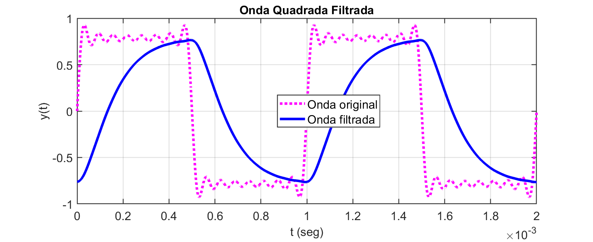
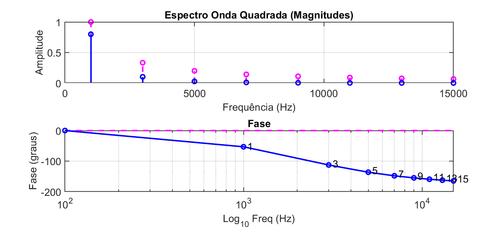
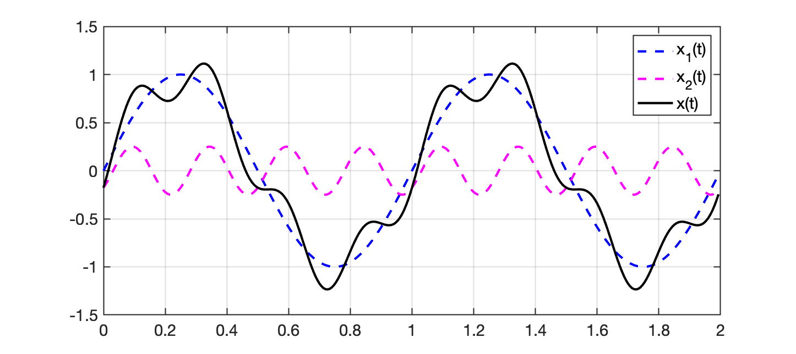
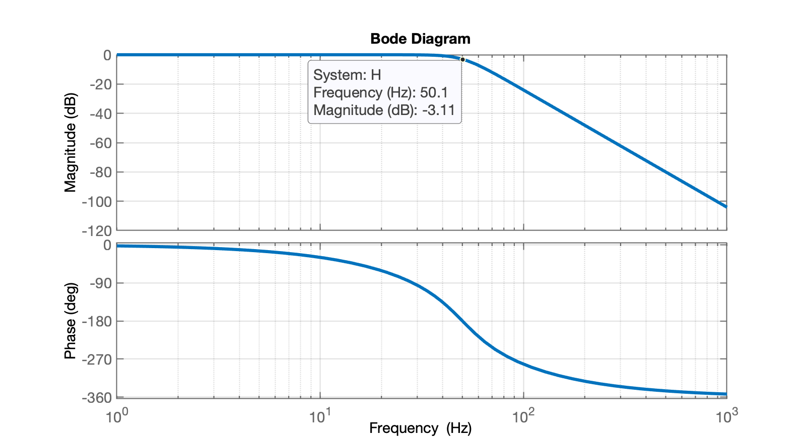

Sugere-se ler os tópicos abaixo listados:
Usando Série de Fourier, sintetize uma Onda Quadrada oscilando à 20 Hz, com aplitude de 1,0 Vpp, mas:
a) Até sua 5a-harmônica (quinto componente não nulo);
b) Até sua 25a-harmônica (vigésimo quinto componente não nulo).
Apresente uma figura/tabela que compare lado à lado os gráficos geradas para os itens (a) e (b).
Obs.: Os itens (a) e (b) devem mostrar um diagrama no tempo da forma de onda resultante e o espectro da onda (somente parte de magnitudes absolutas), além de uma tabela mostrando as amplitudes de cada harmônica.
Simule uma onda quadrada que oscila à 20 Hz @ 1,0 Vpp, passando por um filtro Butterworth passa-baixas de 4a-ordem com frequência de corte em 50 Hz.
Apresente um diagrama no tempo mostrado na mesma figura a onda quadrada original e o sinal filtrado. Deve resultar algo semelhante à:

Obs.: a figura anterior representa uma onda quadrada que oscila à 2 Hz, passando por filtro passa baixas com frequencia de corte em 2 Hz.
Mostre também o espectro original e filtrado da onda quadrada. Algo como:

Na figura acima, a onda quadrada oscila à 1 KHz e passa por filtro passa-baixas com frequencia de corte em 2 KHz, tendo sido considerada até a 15a-harmônica. A curva em rosa corresponde ao espectro orignal da onda e a curva em azul, ao espectro da onda filtrada.
Obs.: Use os valores levantados no item (1 (b)) anterior, isto é, sintetize a onda quadrada até sua 25a-harmônica.
O item (1) têm peso de 40% e o item (2) têm peso de 60%.
Uma onda senoidal oscilando à 1 Hz @ 1,0 Vpp pode ser simulada fazendo-se:
.
Usando a função fplot():
xxxxxxxxxx>> fplot(@(t) 1*sin(2*pi*1*t), [0 2])>> gridSuponha agora que o sinal que queremos reproduzir no tempo seja composto por 2 senóides:
ou sejam, uma senóide, , de 1 Hz @ 1,0 Vpp e outra senóide, , oscilando à 4 Hz @ 0,25 Vpp, defasada de (inicia atrasada).
Usando fplot() ficaria:
xxxxxxxxxx>> fplot(@(t) 1*sin(2*pi*1*t) + 0.25*sin(4*2*pi*1*t - pi/4), [0 2])>> gridOutra opção
Provavelmente será necessário criar um vetor tempo, e vetores para os sinas , e para poder resolver os itens deste trabalho.
Devemos gerar o vetor usando um "passo" ou fator incremental bastante baixo para evitar que apareçam distorções no traçado da onda dependendo da maior frequênica de interesse. Se sugere, "amostrar" o vetor tempo usando um incremente 50 vezes menor que o menor período de tempo da onda mais rápida. Neste caso, 3 Hz, então segundos.
O código para sintetizar estas ondas, de forma a visualizar até 2 ciclos do sinal de 1 Hz, ficaria então:
xxxxxxxxxx>> T=1/3 % período de tempo da onda mais rápida (3 Hz)T = 0.33333>> dt=T/50 % "Delta T", reduzindo em 50 vezes (50 pontos na onda de 3 Hz)dt = 0.0066667>> t=0:dt:2*1/1-dt; % gerando vetor t incremento dt, 2 ciclos em 1 Hz>> size(t) % apenas verificando tamanho do vetor geradoans = 1 300>> x1=1*sin(2*pi*1*t); % gerando sinal x1(t)>> x2=(1/4)*sin(2*pi*4*t-pi/4); % gerando sinal x2(t)>> x=x1+x2; % compondo sinal x(t)>> whos % conferindo variáveis e tamanhos Name Size Bytes Class Attributes T 1x1 8 double ans 1x2 16 double dt 1x1 8 double t 1x300 2400 double x 1x300 2400 double x1 1x300 2400 double x2 1x300 2400 double >> plot(t,x1,'b--', t,x2,'m--', t,x,'k-')>> legend('x_1(t)', 'x_2(t)', 'x(t)') E o resultado seria algo como:

O Matlab/Ocatve facilita o cálculo da expressão associada com um filtro Butterworth, usando-se a função butter():
xxxxxxxxxx>> help butter butter Butterworth digital and analog filter design. [B,A] = butter(N,Wn) designs an Nth order lowpass digital Butterworth filter and returns the filter coefficients in length N+1 vectors B (numerator) and A (denominator). The coefficients are listed in descending powers of z. The cutoff frequency Wn must be 0.0 < Wn < 1.0, with 1.0 corresponding to half the sample rate. ... butter(N,Wn,'s'), butter(N,Wn,'high','s') and butter(N,Wn,'stop','s') design analog Butterworth filters. In this case, Wn is in [rad/s] and it can be greater than 1.0. % Example 1: % For data sampled at 1000 Hz, design a 9th-order highpass % Butterworth filter with cutoff frequency of 300Hz. Wn = 300/500; % Normalized cutoff frequency [z,p,k] = butter(9,Wn,'high'); % Butterworth filter [sos] = zp2sos(z,p,k); % Convert to SOS form h = fvtool(sos); % Plot magnitude response % Example 2: % Design a 4th-order butterworth band-pass filter which passes % frequencies between 0.15 and 0.3. [b,a]=butter(2,[.15,.3]); % Bandpass digital filter design h = fvtool(b,a); % Visualize filter See also buttord, besself, cheby1, cheby2, ellip, freqz, filter, designfilt. Documentation for butter>> No caso deste trabalho, se faz necessário descobrir a equação deste filtro, passa-baixas, analógico, com frequênica de corte de 50 Hz, então:
xxxxxxxxxx>> wn=2*pi*50 % calculando freq. de corte em rad/swn = 314.16>> [b, a] = butter(4, wn, 's') % calculando coeficientes do filtro (analógico)b = 0 0 0 0 9.7409e+09a = 1 820.94 3.3697e+05 8.1023e+07 9.7409e+09>> H=tf(b,a) % montrando transfer functionH = 9.741e09 ----------------------------------------------------- s^4 + 820.9 s^3 + 3.37e05 s^2 + 8.102e07 s + 9.741e09 Continuous-time transfer function.>> zpk(H) % apresentando transfer function em formato mais "amigável" 9.7409e+09 ------------------------------------------------- (s^2 + 580.5s + 9.87e04) (s^2 + 240.4s + 9.87e04) Continuous-time zero/pole/gain model.>> pole(H) -120.22 + 290.25i -120.22 - 290.25i -290.25 + 120.22i -290.25 - 120.22i>> figure; rlocus(H)>> dcgain(H)ans = 1>> % ganho unitário significa que este filtro não atenua sinal abaixo da fc.>> figure; handler=bodeplot(H); % plotando Diagrama de Bode>> setoptions(handler,'FreqUnits','Hz')>> grid>> setoptions(handler, 'FreqScale','log')Note que este filtro possui um par de pólos complexos em e outro par em .
O diagrama de Bode deste filtro rende:

Segue onda_quadrada_fourier.m usado para sintetizar uma onda quadrada usando série de Fourier:
% onda_quadrada_fourier.m% Sintetizando onda quadrada% Fernando Passold, em 17/06/2022clear freq G G_dB t y % evitar problemas se re-executar scriptdisp('Sintese de Onda Quadrada usando Série de Fourier');f=input('Frequencia da onda quadrada (Hz)? ');hh=input('Quantos harmonicas para a onda quadrada? ');n=floor(hh/2)+1; % quantidade de termos da série a serem geradosT=1/f; % periodo da onda quadradafs=f*50*20; % freq. "amostragem" onda quadrada (p/efeitos síntese gráficos)TT=1/fs;ciclos=2*T; % número de ciclos plotados da onda quadradat=0:TT:ciclos; % forma vetor tempou=length(t); % numero de pontosfor k=1:u % varrendo vetor tempo sum = 0; for h=1:n termo=2*h-1; % No. da harmônica. freq(h)=f*termo; % frequencia da harmonica h G(h)=1/termo; % amplitude da harmonica h G_dB(h)=20*log10(G(h)); sum = sum + G(h)*sin(2*pi*freq(h)*t(k)); end y(k)=sum;endfigure;plot(t,y);gridtexto=num2str(termo);title(['Onda Quadrada (até ' texto '^a harmônica)']);xlabel('t (seg)');ylabel('y(t)');% Espectro da onda quadrada geradafigure;stem(freq, G); % note que são "impulsos" em freq's ímparestitle('Espectro Onda Quadrada');xlabel('Frequência (Hz)');ylabel('Amplitude');gridfigure;stem(freq, G_dB); % note que são "impulsos" em freq's ímparestitle('Espectro Onda Quadrada');xlabel('Log_{10}(Freq) (Hz)');ylabel('20*Log_{10}(Amplitude) (dB)');set(gca, 'XScale', 'log')gridSegue código exemplo FPB2a_ordem.m usado para computar impacto de um filtro de 2a-ordem Butterworth para certo sinal de entrada. Este script assume que você executou antes onda_quadrada_fourier.m.
xxxxxxxxxx% FPB2a_ordem.m% Sintetizando Filtro Passa Baixas (passivo) de 2a-ordem% Este filtro é resultado do cascateamento em série de 2 filtros de% 1a-ordem do tipo:% H(s)=wc/(s+wc)% o que resulta, num filtro de 2a-ordem com:% Magnitude:% |H(jw)|= wc^2/sqrt[(wc^2-w^2)^2+(2*wc*w)^2]% /angle G(jw) = atan2(2*wc*w, wc^2-w^2)% Entrada:% freq = vetor com frequencias que devem ter calculadas |G(jw)| /angle% Obs: dado anterior gerado usando 'onda_quadrada_fourier.m' (executar% antes).% Saída gerada:% wc = freq de corte do filtro em rad/s% Tabela relacionando freq x ganho x defasagem%% Fernando Passold, em 18/06/2022clear Mag Phase % evitar problemas se re-executar scriptfc=input('Freq. de corte do Filtro PB (Hz)? ');u=length(freq); % elementos presentes dentro vetor freqwc=2*pi*fc;% gerando tabela na tela em formato compatível MarkDown (table)disp('Comportamento do Filtro com:')fprintf('freq de corte, fc = %g Hz', fc)fprintf(' (%g rad/s)\n\n', wc)%disp('\begin{tabular}{rrrr} \hline')disp('| Freq | Amplitude | Amplitude | Defasagem |')disp('| (Hz) | Original | Original (dB) | (graus) |')disp('| ---: | ---: | ---: | ---: |')for k=1:u % varre freq's desejadas w = 2*pi*freq(k); % freq em rad/s Re = wc*wc - w*w; Im = 2*wc*w; Mag(k) = (wc*wc)/sqrt( Re*Re + Im*Im ); % ganho absoluto Phase(k) = -atan2( Im, Re ); % em rad/s fprintf('| %g |', freq(k)); fprintf(' %g |', Mag(k)); fprintf(' %g dB |', 20*log10(Mag(k))); fprintf(' %gº |\n', Phase(k)*180/pi); % valor em grausend% disp(' \hline')% disp('\end{tabular}')disp(' ');Este script gera uma tabela compatível com Markdown na janela comandos. Algo como:
xxxxxxxxxx>> FPB2a_ordem>> Freq. de corte do Filtro PB (Hz)? 300>> Comportamento do Filtro com:>> freq de corte, fc = 300 Hz (1884.96 rad/s)| Freq | Amplitude | Amplitude | Defasagem || (Hz) | Original | Original (dB) | (graus) || ---: | --------: | ------------: | --------: || 100 | 0.9 | -0.91515 dB | -36.8699º || 300 | 0.5 | -6.0206 dB | -90º || 500 | 0.264706 | -11.5447 dB | -118.072º || 700 | 0.155172 | -16.1837 dB | -133.603º || 900 | 0.1 | -20 dB | -143.13º || 1100 | 0.0692308 | -23.194 dB | -149.49º |Obs.: Este script deverá ser adaptado para o filtro Butterworth de 4a-ordem objetivo deste trabalho.
A parte do código FPB2a_ordem.m(do filtro de 2a-ordem) que computou magnitude e fase é:
xxxxxxxxxxfor k=1:u % varre freq's desejadas w = 2*pi*freq(k); % freq em rad/s Re = wc*wc - w*w; Im = 2*wc*w; Mag(k) = (wc*wc)/sqrt( Re*Re + Im*Im ); % ganho absoluto Phase(k) = -atan2( Im, Re ); % em rad/s fprintf('| %g |', freq(k)); fprintf(' %g |', Mag(k)); fprintf(' %g dB |', 20*log10(Mag(k))); fprintf(' %gº |\n', Phase(k)*180/pi); % valor em grausende considerou equações definidas para filtro Butterworth passa-baixas de 2a-ordem:
Porém, para este trabalho deve ser considerado um filtro de 4a-ordem.
Se você sabe a equação deste filtro, pode substituir o na equação do mesmo, pelos valores de na frequênica (em rad/s) sendo considerada (lembrar que o Matlab é capaz de realizar operações matemáticas sobre números complexos).
Então... No caso do filtro de 4a-ordem:
Ou:
Se você encontrou os parâmetros deste filtro usando o Anexo iii (anterior), deve notar que está de posse dos coeficientes (denominador) e (numerador) deste filtro:
>> aa = 1 820.94 3.3697e+05 8.1023e+07 9.7409e+09>> bb = 0 0 0 0 9.7409e+09Então note, podemos calcular o ganho e defasagem gerados pelo filtro em determinada frequencia fazendo-se:
xxxxxxxxxx>> freq=50;>> w=2*pi*freq % freq convertida para rad/sw = 314.16>> jw=j*w % criando a variável complexa associada com jw na freq. desejadajw = 0 + 314.16i>> num=polyval(b, jw) % substituindo jw no polinômio do numerador de H(s)num = 9.7409e+09>> den=polyval(a, jw) % substituindo jw no polinômio do denominador de H(s)den = -1.3776e+10 + 4.6813e-06i>> mag=abs(num/den) % calculando o módulo em valores absolutosmag = 0.70711>> mag_db=20*log10(mag)mag_db = -3.0103>> phase=angle(num/den) % calculando ângulo de número complexo (em radianos)phase = -3.1416 >> phase_deg=phase*180/pi % defasagem em grausphase_deg = -180>> Note que os resultados obtidos anteriormente estão dentro do esperado na frequência de corte para este filtro em 50 Hz.
Adaptando-se estes cálculos no laço FOR que varia a frequência na qual o filtro deve ser aplicado, variável freq(k), basta fazer algo como:
xxxxxxxxxxwc=2*pi*50; % freq. de corte do filtro em rad/s[b, a] = butter(4, wc, 's'); % calculando os coeficientes a e b do FPB Butterworth de 4a-ordem% H(s) = N(s)/D(s)% N(s) = polinômio definido por b% D(s) = polinômio definido por aH=tf(b,a); % variável H é opcionaldisp('Função transferência do filtro:')zpk(H)for k=1:u % varre freq's desejadas w = 2*pi*freq(k); % freq em rad/s jw = j*w; % gerando a freq. complexa % Note, a linha acima pode produzir erro se por acaso já existe alguma variável `j` % sendo usada no Matlab antes deste código. Neste caso, mudar `j` para `i` ou % rever forma de uso do Matlab, para evitar variáveis `i` e `j`. num = polyval(b, jw); % resolvendo N(jw) para o H(s) den = polyval(a, jw); % resolvendo D(jw) para o H(s) Mag(k) = abs(num/den); % ganho absoluto na freq(k) Phase(k) = angle(num/den); % defasagem em rad/s na freq(k) fprintf('| %g |', freq(k)); fprintf(' %g |', Mag(k)); fprintf(' %g dB |', 20*log10(Mag(k))); % valor em dB fprintf(' %gº |\n', Phase(k)*180/pi); % valor em grausendObs.: Falta pequenas adaptações para transformar FPB2a_ordem.m em algo como FPB4a_ordem.m.
Segue código exemplo impacto_FPB.m que computa o impacto causado pelo filtro (executado na rotina anterior FPB2a_ordem.m) sobre os componentes da onda quadrada (calculados no script onda_quadrada_fourier.m). Note que estes 3 script devem ser executados em sequência sem limpar variáveis no ambiente do Matlab (sem usar comando clear entre a execução das mesmas).
xxxxxxxxxx% impacto_FPB.m% Gera tabela mostrando impacto causado pelo FPB na onda quadrada% Executar antes: 'FPB2a_ordem.m'% Fernando Passold, em 18/06/2022clear amp_orig amp_final y_orig y_filt % evigar problemas se re-executar scriptdisp('Impacto causado pelo FPB sobre a onda Quadrada');disp(' ');u=length(freq); % elementos presentes dentro vetor freqdisp('| Freq (Hz) | Amplitude Original | Ganho Filtro | Atenuação Filtro | Amplitude Final | Defasagem |');disp('| ---: | ---: | ---: | ---: | ---: | ---: |'); for k=1:u % varre freq's desejadas fprintf('| %g |', freq(k)); harmonica(k) = 2*k-1; % determina numero da harmonica amp_orig(k) = 1/harmonica(k); fprintf(' %g |', amp_orig(k)); fprintf(' %g |', Mag(k)); % "ganho" do filtro fprintf(' %g dB |', 20*log10(Mag(k))); % impacto do filtro em dB amp_final(k) = amp_orig(k)*Mag(k); fprintf(' %g |', amp_final(k)); fprintf(' %gº |\n', Phase(k)*180/pi); % valor em grausenddisp(' ');% Gera gráfico temporal comparando onda quadrada original x filtrada% Parte do código baseado em 'onda_quadrada_fourier.m'fs=f*50*20; % freq. "amostragem" onda quadrada (p/efeitos síntese gráficos)TT=1/fs;ciclos=2*T; % número de ciclos plotados da onda quadradat=0:TT:ciclos; % forma vetor tempot_leng=length(t); % numero de pontosfor tt=1:t_leng % varrendo vetor tempo sum_orig = 0; sum_filt = 0; for k=1:u % varre as freq's das harmonicas % freq(h) = frequencia da harmonica k sum_orig = sum_orig + amp_orig(k)*sin(2*pi*freq(k)*t(tt)); sum_filt = sum_filt + amp_final(k)*sin(2*pi*freq(k)*t(tt)+Phase(k)); end y_orig(tt)=sum_orig; y_filt(tt)=sum_filt;endfigure;plot(t,y_orig,'m--', t,y_filt,'b-');gridtexto=num2str(n);title(['Onda Quadrada Filtrada']);xlabel('t (seg)');ylabel('y(t)');legend('Onda original','Onda filtrada')% Espectro linear da onda quadrada original x filtradafigure;subplot(211);stem(freq, G, 'm--'); % note que são "impulsos" em freq's ímpareshold on;stem(freq, amp_final, 'b-');title('Espectro Onda Quadrada (Magnitudes)');xlabel('Frequência (Hz)');ylabel('Amplitude');gridsubplot(212); % gráfico da Fase% Acrescentando pontos à esquerda do gráfico numa década inferior% a da 1a-harmônica da onda quadrada.clear freq2 Phase2 Ph_originalfreq2=[f/10 freq];Phase2=[0 Phase];uu=length(freq2);Ph_original=zeros(1,uu);plot(freq2, Ph_original*180/pi, 'm--')hold onplot(freq2, Phase2*180/pi, 'bo-')% acrescentando texto com No. da harmônicafor k=1:u texto = num2str(harmonica(k)); text(freq(k)*1.05, 0.95*Phase(k)*180/pi, texto);endset(gca, 'XScale', 'log')title('Fase');xlabel('Log_{10} Freq (Hz)')ylabel('Fase (graus)');gridAlém de gráricos, o script anterior gera uma tabela (compatível Markdown) na janela de comandos como mostrado à seguir:
xxxxxxxxxxImpacto do filtro:| Freq (Hz) | Amplitude Original | Ganho Filtro | Atenuação Filtro | Amplitude Final | Defasagem || --------: | -----------------: | -----------: | ---------------: | --------------: | --------: || 1 | 1 | 0.8 | -1.9382 dB | 0.8 | 53.1301º || 3 | 0.333333 | 0.307692 | -10.2377 dB | 0.102564 | 112.62º || 5 | 0.2 | 0.137931 | -17.2068 dB | 0.0275862 | 136.397º || 7 | 0.142857 | 0.0754717 | -22.4443 dB | 0.0107817 | 148.109º || 9 | 0.111111 | 0.0470588 | -26.5472 dB | 0.00522876 | 154.942º || 11 | 0.0909091 | 0.032 | -29.897 dB | 0.00290909 | 159.39º || 13 | 0.0769231 | 0.0231214 | -32.7197 dB | 0.00177857 | 162.508º || 15 | 0.0666667 | 0.0174672 | -35.1555 dB | 0.00116448 | 164.811º || 17 | 0.0588235 | 0.0136519 | -37.2962 dB | 0.000803052 | 166.58º || 19 | 0.0526316 | 0.0109589 | -39.2047 dB | 0.000576784 | 167.982º || 21 | 0.047619 | 0.00898876 | -40.926 dB | 0.000428036 | 169.119º || 23 | 0.0434783 | 0.00750469 | -42.4933 dB | 0.000326291 | 170.061º || 25 | 0.04 | 0.0063593 | -43.9318 dB | 0.000254372 | 170.852º || 27 | 0.037037 | 0.00545703 | -45.2609 dB | 0.000202112 | 171.527º || 29 | 0.0344828 | 0.00473373 | -46.4959 dB | 0.000163232 | 172.11º || 31 | 0.0322581 | 0.00414508 | -47.6493 dB | 0.000133712 | 172.617º || 33 | 0.030303 | 0.00365965 | -48.7312 dB | 0.000110899 | 173.064º || 35 | 0.0285714 | 0.00325468 | -49.7498 dB | 9.29908e-05 | 173.459º || 37 | 0.027027 | 0.00291333 | -50.7122 dB | 7.87386e-05 | 173.812º || 39 | 0.025641 | 0.00262295 | -51.6242 dB | 6.72551e-05 | 174.129º || 41 | 0.0243902 | 0.00237389 | -52.4908 dB | 5.78997e-05 | 174.415º || 43 | 0.0232558 | 0.00215866 | -53.3163 dB | 5.02014e-05 | 174.674º || 45 | 0.0222222 | 0.00197141 | -54.1044 dB | 4.38092e-05 | 174.91º || 47 | 0.0212766 | 0.0018075 | -54.8584 dB | 3.84575e-05 | 175.127º || 49 | 0.0204082 | 0.0016632 | -55.5811 dB | 3.39429e-05 | 175.325º || 51 | 0.0196078 | 0.00153551 | -56.275 dB | 3.0108e-05 | 175.509º || 53 | 0.0188679 | 0.00142197 | -56.9422 dB | 2.68296e-05 | 175.678º || 55 | 0.0181818 | 0.00132057 | -57.5848 dB | 2.40103e-05 | 175.835º || 57 | 0.0175439 | 0.00122963 | -58.2045 dB | 2.15725e-05 | 175.981º || 59 | 0.0169492 | 0.00114778 | -58.8029 dB | 1.94538e-05 | 176.117º || 61 | 0.0163934 | 0.00107383 | -59.3813 dB | 1.76037e-05 | 176.244º || 63 | 0.015873 | 0.0010068 | -59.9412 dB | 1.59809e-05 | 176.363º || 65 | 0.0153846 | 0.00094585 | -60.4836 dB | 1.45515e-05 | 176.475º || 67 | 0.0149254 | 0.000890274 | -61.0095 dB | 1.32877e-05 | 176.58º || 69 | 0.0144928 | 0.000839454 | -61.5201 dB | 1.2166e-05 | 176.679º || 71 | 0.0140845 | 0.000792864 | -62.016 dB | 1.11671e-05 | 176.773º || 73 | 0.0136986 | 0.000750047 | -62.4982 dB | 1.02746e-05 | 176.861º || 75 | 0.0133333 | 0.000710606 | -62.9674 dB | 9.47474e-06 | 176.945º || 77 | 0.012987 | 0.000674195 | -63.4243 dB | 8.75578e-06 | 177.024º |
Fernando Passold @ 2025/1